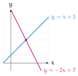

📝 Repaso de la unidad
Actividades de repaso
Escribe tu respuesta y después pulsa «Ver la solución» para corregirla tú. Los puntos dicen el nivel: ● básico, ●●● ampliación.
Escribe tres soluciones de la ecuación \(2x - y = 4\) y represéntalas. ¿Qué figura forman todas sus soluciones?
Solución
Por ejemplo, \((0, -4)\), \((2, 0)\) y \((3, 2)\). Una recta.
¿Cómo te ha ido?
¿Cuáles de estos pares son solución de la ecuación \(x + 2y = 8\)?
- \((2, 3)\)
- \((4, 1)\)
- \((0, 4)\)
- \((-2, 5)\)
- \((6, -1)\)
- \((8, 0)\)
Solución
Son solución a), c), d) y f); b) y e) no.
¿Cómo te ha ido?
Completa los pares para que sean soluciones de \(3x + y = 10\): \((0, \ldots)\), \((1, \ldots)\), \((\ldots, 4)\), \((3, \ldots)\), \((-1, \ldots)\).
Solución
\((0, 10)\), \((1, 7)\), \((2, 4)\), \((3, 1)\), \((-1, 13)\)
¿Cómo te ha ido?
Despeja \(y\) en cada ecuación.
- \(2x + y = 9\)
- \(x - y = 3\)
- \(3x + 2y = 12\)
- \(4x - 2y = 6\)
- \(x + 3y = 0\)
- \(5x - y = -2\)
Solución
a) \(y = 9 - 2x\) b) \(y = x - 3\) c) \(y = \frac{12 - 3x}{2}\) d) \(y = 2x - 3\) e) \(y = -\frac{x}{3}\) f) \(y = 5x + 2\)
¿Cómo te ha ido?
Escribe una ecuación con dos incógnitas para cada enunciado.
- Dos números suman \(15\).
- Un número es el triple de otro.
- Tres cuadernos y dos bolígrafos cuestan \(7{,}50\) €.
- El perímetro de un rectángulo es \(24\) cm.
Solución
a) \(x + y = 15\) b) \(x = 3y\) c) \(3x + 2y = 7{,}5\) d) \(2x + 2y = 24\)
¿Cómo te ha ido?
Halla \(k\) para que \((2, k)\) sea solución de la ecuación \(5x - 2y = 4\), y \(m\) para que también lo sea \((m, -1)\).
Solución
\(k = 3\); \(m = \frac{2}{5}\)
¿Cómo te ha ido?
Haz una tabla de valores y representa la recta de soluciones de \(x - 2y = 2\). ¿Pasa por el punto \((6, 2)\)? ¿Y por \((1, 1)\)?
Solución
Por ejemplo, \((0, -1)\), \((2, 0)\) y \((4, 1)\). Pasa por \((6, 2)\), pero no por \((1, 1)\).
¿Cómo te ha ido?
Escribe todas las soluciones de \(x + y = 5\) en las que \(x\) e \(y\) son números naturales (el \(0\) incluido). ¿Cuántas hay?
Solución
\((0,5)\), \((1,4)\), \((2,3)\), \((3,2)\), \((4,1)\) y \((5,0)\): seis soluciones.
¿Cómo te ha ido?
La recta de soluciones de \(ax + 3y = 11\) pasa por el punto \((4, 1)\). ¿Cuánto vale \(a\)? Escribe otras dos soluciones de la ecuación.
Solución
\(a = 2\). Por ejemplo, \((1, 3)\) y \((7, -1)\).
¿Cómo te ha ido?
Las camisetas de una tienda cuestan \(8\) € y las gorras, \(5\) €. Marta se ha gastado exactamente \(60\) €. Escribe una ecuación y halla todas las posibilidades de compra.
Solución
\(8x + 5y = 60\): \(0\) camisetas y \(12\) gorras, o \(5\) camisetas y \(4\) gorras.
¿Cómo te ha ido?
¿Es \((3, -2)\) solución de estos sistemas?
- \(\left\{ \begin{array}{l} 2x + y = 4 \\ x - y = 5 \end{array} \right.\)
- \(\left\{ \begin{array}{l} x + 3y = -3 \\ 4x + y = 12 \end{array} \right.\)
Solución
a) sí b) no: cumple la primera pero no la segunda
¿Cómo te ha ido?
¿Es \((1, 4)\) solución de estos sistemas?
- \(\left\{ \begin{array}{l} 3x + y = 7 \\ x - y = -3 \end{array} \right.\)
- \(\left\{ \begin{array}{l} 2x + y = 6 \\ x + 2y = 8 \end{array} \right.\)
Solución
a) sí b) no: cumple la primera pero no la segunda
¿Cómo te ha ido?
¿Cuál de los pares \((2, 1)\), \((3, -1)\) y \((1, 2)\) es la solución del sistema \(\left\{ \begin{array}{l} x + y = 3 \\ 2x - y = 0 \end{array} \right.\)?
Solución
\((1, 2)\)
¿Cómo te ha ido?
Comprueba si \((-2, 3)\) es solución de cada sistema.
- \(\left\{ \begin{array}{l} x + y = 1 \\ 3x + 2y = 0 \end{array} \right.\)
- \(\left\{ \begin{array}{l} 2x + y = -1 \\ x - y = -4 \end{array} \right.\)
- \(\left\{ \begin{array}{l} \frac{x}{2} + \frac{y}{3} = 0 \\ 4x + y = -5 \end{array} \right.\)
Solución
a) sí b) no c) sí
¿Cómo te ha ido?
Entre Ana y Luis tienen \(24\) cromos, y Ana tiene \(6\) más que Luis. Escribe el sistema que describe la situación y comprueba que \((15, 9)\) es su solución.
Solución
\(a + l = 24\); \(a - l = 6\). Se cumple: \(15 + 9 = 24\) y \(15 - 9 = 6\).
¿Cómo te ha ido?
Halla \(a\) y \(b\) para que \((2, -1)\) sea solución del sistema \(\left\{ \begin{array}{l} ax + y = 5 \\ x + by = 5 \end{array} \right.\)
Solución
\(a = 3\), \(b = -3\)
¿Cómo te ha ido?
¿Es \(\left(\frac{1}{2}, 3\right)\) solución del sistema \(\left\{ \begin{array}{l} 4x + y = 5 \\ 2x - \frac{y}{3} = 0 \end{array} \right.\)? ¿Y \((0, 5)\)?
Solución
\(\left(\frac{1}{2}, 3\right)\) sí; \((0, 5)\) no: solo cumple la primera ecuación.
¿Cómo te ha ido?
Daniel dice que \((4, 1)\) es solución del sistema \(\left\{ \begin{array}{l} x - y = 3 \\ x + y = 7 \end{array} \right.\) porque cumple la primera ecuación. ¿Tiene razón? Busca la solución.
Solución
No: no cumple la segunda (\(4 + 1 = 5\)). La solución es \((5, 2)\).
¿Cómo te ha ido?
Completa los números que faltan para que \((3, -2)\) sea solución de las tres ecuaciones.
- \(x + y = \square\)
- \(2x - y = \square\)
- \(3x + \square\, y = 5\)
Solución
a) \(1\) b) \(8\) c) \(2\)
¿Cómo te ha ido?
La solución de un sistema es \(x = 2\), \(y = 5\). Una de sus ecuaciones es \(3x - y = 1\) y la otra es de la forma \(x + ay = 12\). Halla \(a\) y comprueba que \((2, 5)\) cumple las dos.
Solución
\(a = 2\)
¿Cómo te ha ido?
- \(\left\{ \begin{array}{l} 2x+3y=12 \\ x-y=1 \end{array} \right.\)
- \(\left\{ \begin{array}{l} \frac{x}{2}+\frac{y}{3}=3 \\ x-y=1 \end{array} \right.\)
Solución
a) \(x=3\), \(y=2\) b) \(x=4\), \(y=3\)
¿Cómo te ha ido?
\(\left\{\begin{array}{l} x + 2y = 7 \\ 3x - y = 7 \end{array}\right.\)
Solución
\(x = 3\), \(y = 2\)
¿Cómo te ha ido?
\(\left\{\begin{array}{l} 4x + 3y = 6 \\ 2x - 3y = 12 \end{array}\right.\)
Solución
\(x = 3\), \(y = -2\)
¿Cómo te ha ido?
- \(\left\{ \begin{array}{l} y = 2x \\ x + y = 9 \end{array} \right.\)
- \(\left\{ \begin{array}{l} x = y + 1 \\ 2x + y = 11 \end{array} \right.\)
Solución
a) \(x = 3\), \(y = 6\) b) \(x = 4\), \(y = 3\)
¿Cómo te ha ido?
- \(\left\{ \begin{array}{l} x + 3y = 11 \\ 2x - y = 1 \end{array} \right.\)
- \(\left\{ \begin{array}{l} x - y = 2 \\ 3x + 2y = 21 \end{array} \right.\)
Solución
a) \(x = 2\), \(y = 3\) b) \(x = 5\), \(y = 3\)
¿Cómo te ha ido?
- \(\left\{ \begin{array}{l} y = x + 3 \\ y = 2x + 1 \end{array} \right.\)
- \(\left\{ \begin{array}{l} x = 2y + 1 \\ x = 7 - y \end{array} \right.\)
Solución
a) \(x = 2\), \(y = 5\) b) \(x = 5\), \(y = 2\)
¿Cómo te ha ido?
- \(\left\{ \begin{array}{l} x + y = 12 \\ x - y = 2 \end{array} \right.\)
- \(\left\{ \begin{array}{l} 2x + y = 9 \\ 3x - y = 11 \end{array} \right.\)
Solución
a) \(x = 7\), \(y = 5\) b) \(x = 4\), \(y = 1\)
¿Cómo te ha ido?
Resta las ecuaciones para eliminar una incógnita.
- \(\left\{ \begin{array}{l} 3x + 2y = 13 \\ x + 2y = 7 \end{array} \right.\)
- \(\left\{ \begin{array}{l} 5x - y = 18 \\ 2x - y = 6 \end{array} \right.\)
Solución
a) \(x = 3\), \(y = 2\) b) \(x = 4\), \(y = 2\)
¿Cómo te ha ido?
- \(\left\{ \begin{array}{l} x + y = 9 \\ 3x - y = 7 \end{array} \right.\)
- \(\left\{ \begin{array}{l} 2x + y = 1 \\ 5x + 3y = 4 \end{array} \right.\)
Solución
a) \(x = 4\), \(y = 5\) b) \(x = -1\), \(y = 3\)
¿Cómo te ha ido?
- \(\left\{ \begin{array}{l} y = 3x - 2 \\ y = x + 6 \end{array} \right.\)
- \(\left\{ \begin{array}{l} y = 4 - x \\ y = 2x - 5 \end{array} \right.\)
Solución
a) \(x = 4\), \(y = 10\) b) \(x = 3\), \(y = 1\)
¿Cómo te ha ido?
- \(\left\{ \begin{array}{l} 3x + 2y = 12 \\ 5x - 2y = 4 \end{array} \right.\)
- \(\left\{ \begin{array}{l} 5x - 2y = 4 \\ 3x + 4y = 18 \end{array} \right.\)
Solución
a) \(x = 2\), \(y = 3\) b) \(x = 2\), \(y = 3\)
¿Cómo te ha ido?
Para resolver por igualación el sistema \(y=2x+1\), \(y=-x+7\), Leo escribe \(2x+1=-x+7\;\rightarrow\;2x-x=7-1\;\rightarrow\;x=6\). Explica el error y resuélvelo.
Solución
\(x=2\), \(y=5\)
¿Cómo te ha ido?
- \(\left\{ \begin{array}{l} x+y=10 \\ x-y=4 \end{array} \right.\)
- \(\left\{ \begin{array}{l} 3x-y=5 \\ x+2y=4 \end{array} \right.\)
- \(\left\{ \begin{array}{l} 4x+3y=18 \\ 2x-y=4 \end{array} \right.\)
- \(\left\{ \begin{array}{l} 5x+2y=1 \\ 3x-4y=11 \end{array} \right.\)
- \(\left\{ \begin{array}{l} \frac{x}{3}-\frac{y}{2}=0 \\ x+y=10 \end{array} \right.\)
- \(\left\{ \begin{array}{l} 2(x-1)+y=7 \\ x-(y+1)=-1 \end{array} \right.\)
Solución
a) \((7,3)\) b) \((2,1)\) c) \((3,2)\) d) \((1,-2)\) e) \((6,4)\) f) \((3,3)\)
¿Cómo te ha ido?
\(\left\{\begin{array}{l} \dfrac{x}{2} + \dfrac{y}{3} = 4 \\[2mm] x - y = 3 \end{array}\right.\)
Solución
\(x = 6\), \(y = 3\)
¿Cómo te ha ido?
\(\left\{\begin{array}{l} 2(x + 1) - 3(y - 2) = 5 \\ x + 2(y - 1) = y + 4 \end{array}\right.\)
Solución
\(x = 3\), \(y = 3\)
¿Cómo te ha ido?
Resuelve el sistema y comprueba la solución con el modo de ecuaciones (EQN) de la calculadora, si lo tiene:
Solución
\(x = 2\), \(y = 5\)
¿Cómo te ha ido?
- \(\left\{ \begin{array}{l} x + y = 6 \\ x - 2y = 0 \end{array} \right.\)
- \(\left\{ \begin{array}{l} 2x - y = 3 \\ 4x - y = 9 \end{array} \right.\)
Solución
a) \(x = 4\), \(y = 2\) b) \(x = 3\), \(y = 3\)
¿Cómo te ha ido?
- \(\left\{ \begin{array}{l} 2x + 3y = 8 \\ 3x - 2y = -1 \end{array} \right.\)
- \(\left\{ \begin{array}{l} 4x - 5y = 3 \\ 3x + 2y = 8 \end{array} \right.\)
Solución
a) \(x = 1\), \(y = 2\) b) \(x = 2\), \(y = 1\)
¿Cómo te ha ido?
Resuelve el sistema \(\left\{ \begin{array}{l} x + 2y = 8 \\ 3x - y = 3 \end{array} \right.\) por sustitución, por igualación y por reducción. ¿Qué método te ha resultado más cómodo?
Solución
\(x = 2\), \(y = 3\). Respuesta abierta.
¿Cómo te ha ido?
Indica qué método es más cómodo para cada sistema y resuélvelo.
- \(\left\{ \begin{array}{l} y = 5 - x \\ y = 3x + 1 \end{array} \right.\)
- \(\left\{ \begin{array}{l} 2x + 3y = 1 \\ 2x - 5y = 9 \end{array} \right.\)
- \(\left\{ \begin{array}{l} x = 3 + y \\ 4x - 3y = 14 \end{array} \right.\)
Solución
a) igualación: \((1, 4)\) b) reducción: \((2, -1)\) c) sustitución: \((5, 2)\)
¿Cómo te ha ido?
- \(\left\{ \begin{array}{l} 3x + 4y = -2 \\ 2x - y = 6 \end{array} \right.\)
- \(\left\{ \begin{array}{l} x - 3y = -7 \\ 2x + y = 0 \end{array} \right.\)
Solución
a) \(x = 2\), \(y = -2\) b) \(x = -1\), \(y = 2\)
¿Cómo te ha ido?
- \(\left\{ \begin{array}{l} 3(x - 2) + y = 4 \\ x - 2(y - 1) = 3 \end{array} \right.\)
- \(\left\{ \begin{array}{l} 2(x + y) - 3x = 1 \\ 4(x - 1) - y = 6 \end{array} \right.\)
Solución
a) \(x = 3\), \(y = 1\) b) \(x = 3\), \(y = 2\)
¿Cómo te ha ido?
- \(\left\{ \begin{array}{l} \dfrac{x}{2} - \dfrac{y}{4} = 1 \\[2mm] x + y = 8 \end{array} \right.\)
- \(\left\{ \begin{array}{l} \dfrac{x}{3} + y = 4 \\[2mm] \dfrac{x}{2} - \dfrac{y}{2} = 2 \end{array} \right.\)
Solución
a) \(x = 4\), \(y = 4\) b) \(x = 6\), \(y = 2\)
¿Cómo te ha ido?
Multiplica por \(10\) la primera ecuación y resuelve: \(\left\{ \begin{array}{l} 0{,}2x + 0{,}5y = 2{,}6 \\ x - y = -1 \end{array} \right.\)
Solución
\(x = 3\), \(y = 4\)
¿Cómo te ha ido?
Para resolver \(\left\{ \begin{array}{l} x + 3y = 10 \\ 2x + y = 5 \end{array} \right.\) por reducción, Marta multiplica la primera por \(-2\) y escribe \(-2x - 6y = 10\). Explica el error y resuelve el sistema.
Solución
No multiplica el segundo miembro: es \(-20\). Solución: \(x = 1\), \(y = 3\).
¿Cómo te ha ido?
- \(\left\{ \begin{array}{l} \dfrac{x}{3} + \dfrac{y}{2} = 5 \\[2mm] x - y = 5 \end{array} \right.\)
- \(\left\{ \begin{array}{l} 2(x + 1) - y = 7 \\ 3x - 2(y - 1) = 9 \end{array} \right.\)
Solución
a) \(x = 9\), \(y = 4\) b) \(x = 3\), \(y = 1\)
¿Cómo te ha ido?
\(\left\{ \begin{array}{l} \dfrac{x + 1}{2} + \dfrac{y - 1}{3} = 3 \\[2mm] \dfrac{x}{3} - \dfrac{y - 2}{2} = 0 \end{array} \right.\)
Solución
\(x = 3\), \(y = 4\)
¿Cómo te ha ido?
\(\left\{ \begin{array}{l} 5(x - 1) - 2(y + 3) = 3x - 7 \\ 3(x + y) - 2(x - y) = 20 \end{array} \right.\)
Solución
\(x = 5\), \(y = 3\)
¿Cómo te ha ido?
\(\left\{ \begin{array}{l} \dfrac{x}{5} + \dfrac{y}{3} = 2 \\[2mm] \dfrac{x - 2}{3} = \dfrac{y - 1}{2} \end{array} \right.\)
Solución
\(x = 5\), \(y = 3\)
¿Cómo te ha ido?
Resuelve el sistema \(\left\{ \begin{array}{l} x + y = 3a \\ x - y = a \end{array} \right.\) en función del número \(a\). ¿Para qué valor de \(a\) la solución es \((8, 4)\)?
Solución
\(x = 2a\), \(y = a\); \(a = 4\)
¿Cómo te ha ido?
- \(\left\{ \begin{array}{l} 2x-y=3 \\ 4x-2y=6 \end{array} \right.\)
- \(\left\{ \begin{array}{l} x+3y=2 \\ 2x+6y=5 \end{array} \right.\)
- \(\left\{ \begin{array}{l} x+y=1 \\ x-y=1 \end{array} \right.\)
Solución
a) Infinitas soluciones b) Sin solución c) Una solución: \((1,0)\)
¿Cómo te ha ido?
Representa las rectas y halla su punto de corte: \(\left\{ \begin{array}{l} x + y = 6 \\ x - y = 2 \end{array} \right.\)
Solución
\((4, 2)\)
¿Cómo te ha ido?
Observa la gráfica y escribe la solución del sistema formado por las dos rectas. Compruébala sustituyendo en las ecuaciones.

Solución
\((2, 3)\): \(3 = 2 + 1\) y \(3 = -4 + 7\).
¿Cómo te ha ido?
¿Cómo son las rectas de cada sistema? ¿Cuántas soluciones tiene?
- \(\left\{ \begin{array}{l} x + 2y = 5 \\ 2x + 4y = 10 \end{array} \right.\)
- \(\left\{ \begin{array}{l} 3x - y = 1 \\ 3x - y = 4 \end{array} \right.\)
- \(\left\{ \begin{array}{l} x - y = 0 \\ x + y = 4 \end{array} \right.\)
Solución
a) Coinciden: infinitas b) Paralelas: ninguna c) Se cortan: una, \((2, 2)\)
¿Cómo te ha ido?
Indica de qué tipo es cada sistema y resuélvelo si es posible.
- \(\left\{ \begin{array}{l} 3x + y = 2 \\ 6x + 2y = 4 \end{array} \right.\)
- \(\left\{ \begin{array}{l} x + 2y = 4 \\ 2x + 4y = 3 \end{array} \right.\)
- \(\left\{ \begin{array}{l} x + y = 5 \\ x - y = 1 \end{array} \right.\)
Solución
a) compatible indeterminado b) incompatible c) compatible determinado: \(x = 3\), \(y = 2\)
¿Cómo te ha ido?
Representa las dos rectas y halla su punto de corte. Comprueba el resultado resolviendo el sistema de forma algebraica.
Solución
Se cortan en \((3, 5)\).
¿Cómo te ha ido?
Indica si es verdadero o falso y justifícalo.
Marca V (verdadero) o F (falso). Después justifica tu respuesta.
Solución
a) Verdadero b) Verdadero c) Falso
¿Cómo te ha ido?
Para el sistema \(2x+3y=12\), \(x-y=1\), despeja \(y\) en las dos ecuaciones. En una hoja de cálculo escribe \(x=0, 1, \ldots, 6\) en la columna A, en la B =(12-2*A1)/3 y en la C =A1-1. ¿En qué fila coinciden las columnas B y C? ¿Qué significa?
Solución
En \(x=3\) (las dos valen 2): es la solución del sistema.
¿Cómo te ha ido?
Escribe una segunda ecuación para que el sistema formado con \(3x - y = 5\) sea:
- Compatible determinado, con solución \((2, 1)\).
- Incompatible.
- Compatible indeterminado.
Solución
Respuesta abierta. Por ejemplo: a) \(x + y = 3\) b) \(3x - y = 0\) c) \(6x - 2y = 10\)
¿Cómo te ha ido?
Escribe en GeoGebra las ecuaciones \(2x + y = 7\) y \(x - 3y = 0\). Usa el comando Interseca para hallar el punto de corte.
- ¿Cuál es la solución del sistema? Compruébala resolviéndolo a mano.
- Cambia la segunda ecuación por \(4x + 2y = 10\). ¿Qué ocurre? ¿Qué tipo de sistema es?
📐 Ábrelo en GeoGebra Prueba la actividad moviendo los puntos y los deslizadores.
Solución
a) \((3, 1)\) b) Rectas paralelas: incompatible.
¿Cómo te ha ido?
Representa las rectas, halla el punto de corte y compruébalo algebraicamente: \(\left\{ \begin{array}{l} y = 2x - 3 \\ y = -x + 3 \end{array} \right.\)
Solución
\((2, 1)\)
¿Cómo te ha ido?
Representa cada sistema y clasifícalo.
- \(\left\{ \begin{array}{l} x - y = 1 \\ 2x - 2y = 6 \end{array} \right.\)
- \(\left\{ \begin{array}{l} y = 3 - x \\ 2x + 2y = 6 \end{array} \right.\)
Solución
a) Rectas paralelas: incompatible b) Rectas coincidentes: compatible indeterminado
¿Cómo te ha ido?
Resuelve por reducción y clasifica el sistema según la igualdad a la que llegas.
- \(\left\{ \begin{array}{l} 2x - 3y = 4 \\ -4x + 6y = -8 \end{array} \right.\)
- \(\left\{ \begin{array}{l} x + 4y = 3 \\ 3x + 12y = 7 \end{array} \right.\)
Solución
a) \(0 = 0\): compatible indeterminado b) \(0 = -2\): incompatible
¿Cómo te ha ido?
¿Para qué valor de \(k\) es incompatible el sistema \(\left\{ \begin{array}{l} x + 2y = 3 \\ 2x + ky = 5 \end{array} \right.\)? ¿Hay algún valor de \(k\) para el que sea compatible indeterminado?
Solución
\(k = 4\). No: haría falta que el segundo miembro fuera \(6\).
¿Cómo te ha ido?
Sin representarlas, indica si se cortan las rectas \(y = 3x + 2\) e \(y = 3x - 1\). ¿Y las rectas \(y = 3x + 2\) e \(y = -3x + 2\)? Si se cortan, halla el punto.
Solución
Las primeras son paralelas (no se cortan). Las segundas se cortan en \((0, 2)\).
¿Cómo te ha ido?
Inventa un sistema de dos ecuaciones cuya solución sea \(x = 2\), \(y = -1\), y otro que no tenga solución. Explica cómo los has construido.
Solución
Respuesta abierta. Por ejemplo, \(x + y = 1\), \(x - y = 3\); y \(x + y = 1\), \(x + y = 4\).
¿Cómo te ha ido?
Un sistema de dos ecuaciones lineales tiene, al menos, las soluciones \((1, 2)\) y \((3, 6)\). ¿Cuántas soluciones tiene? ¿De qué tipo es? Escribe otra solución.
Solución
Infinitas: compatible indeterminado (las rectas coinciden). Por ejemplo, \((2, 4)\).
¿Cómo te ha ido?
Halla \(a\) y \(b\) para que el sistema \(\left\{ \begin{array}{l} ax + y = 3 \\ 4x + 2y = b \end{array} \right.\) sea compatible indeterminado. ¿Qué valores hacen que sea incompatible?
Solución
\(a = 2\) y \(b = 6\). Incompatible: \(a = 2\) y \(b \neq 6\).
¿Cómo te ha ido?
La suma de dos números es 45 y su diferencia es 13. ¿Cuáles son?
Solución
\(29\) y \(16\).
¿Cómo te ha ido?
Un número es el doble de otro y entre los dos suman \(54\). ¿Qué números son?
Solución
\(36\) y \(18\)
¿Cómo te ha ido?
En un aparcamiento hay \(40\) vehículos, entre coches y motos, y se cuentan \(130\) ruedas. ¿Cuántos coches y cuántas motos hay?
Solución
\(25\) coches y \(15\) motos.
¿Cómo te ha ido?
En una hucha hay 20 monedas, unas de 1 € y otras de 2 €. En total hay \(31\) €. ¿Cuántas monedas hay de cada clase?
Solución
\(9\) de 1 € y \(11\) de 2 €.
¿Cómo te ha ido?
El perímetro de un rectángulo es \(34\) cm y su largo mide 2 cm más que el doble del ancho. Calcula sus dimensiones.
Solución
\(12\) cm de largo y \(5\) cm de ancho.
¿Cómo te ha ido?
En un examen de 20 preguntas, cada acierto suma 3 puntos y cada fallo resta 1. Lucas ha contestado todas y ha obtenido 36 puntos. ¿Cuántas ha acertado?
Solución
14 aciertos.
¿Cómo te ha ido?
En una cafetería, 3 bocadillos y 2 refrescos cuestan \(13{,}50\) €, y 2 bocadillos y 3 refrescos cuestan 12 €. ¿Cuánto cuesta cada cosa?
Solución
Bocadillo: \(3{,}30\) €; refresco: \(1{,}80\) €.
¿Cómo te ha ido?
Pago 50 € con 7 billetes, unos de 5 € y otros de 10 €. ¿Cuántos billetes de cada clase he usado?
Solución
4 de 5 € y 3 de 10 €.
¿Cómo te ha ido?
Un número es el triple de otro menos 2, y entre los dos suman 38. ¿Qué números son?
Solución
28 y 10
¿Cómo te ha ido?
Para un concierto se han vendido 600 entradas, unas de pista a 45 € y otras de grada a 30 €. Se han recaudado 21 000 €. ¿Cuántas entradas de cada tipo se vendieron?
Solución
200 de pista y 400 de grada.
¿Cómo te ha ido?
Lee el texto y contesta.
El pasado domingo se celebró en Torrelavega una carrera solidaria a favor de la asociación de familias de niños con enfermedades raras. Participaron 850 corredores. La inscripción costaba 12 € para los adultos y 5 € para los menores de 16 años, y se recaudaron 7 400 € con las inscripciones. Cada adulto recibió una camiseta, que costó 3 €, y cada menor, una medalla, que costó 1 €. El resto del dinero se entregó a la asociación.
- Plantea un sistema para averiguar cuántos adultos y cuántos menores participaron.
- Resuélvelo.
- ¿Qué porcentaje de los participantes eran menores?
- ¿Cuánto dinero se entregó a la asociación?
Solución
a) \(a + m = 850\); \(12a + 5m = 7\,400\) b) 450 adultos y 400 menores c) Un 47% d) \(5\,650\) €
¿Cómo te ha ido?
El perímetro de un triángulo isósceles es \(32\) cm y cada uno de los lados iguales mide \(4\) cm más que la base. ¿Cuánto mide cada lado?
Solución
Base \(8\) cm; lados iguales \(12\) cm.
¿Cómo te ha ido?
En las fiestas de un pueblo, \(3\) raciones de rabas y \(2\) refrescos cuestan \(31\) €, y \(2\) raciones de rabas y \(3\) refrescos cuestan \(24\) €. ¿Cuánto cuesta cada cosa?
Solución
Ración de rabas: \(9\) €; refresco: \(2\) €.
¿Cómo te ha ido?
Entre una madre y su hijo suman \(48\) años, y la madre tiene \(30\) años más que el hijo. ¿Qué edad tiene cada uno?
Solución
Madre \(39\) años; hijo \(9\).
¿Cómo te ha ido?
Un grupo de \(32\) personas visita una cueva prehistórica. La entrada general cuesta \(3\) € y la reducida, \(1{,}50\) €, y han pagado \(75\) € en total. ¿Cuántas entradas de cada tipo han comprado?
Solución
\(18\) generales y \(14\) reducidas.
¿Cómo te ha ido?
Un fontanero cobra una cantidad fija por desplazamiento y otra por cada hora de trabajo. Por una reparación de \(2\) horas cobró \(70\) € y por otra de \(5\) horas, \(145\) €. ¿Cuánto cobra por el desplazamiento? ¿Y por hora?
Solución
Desplazamiento \(20\) €; hora \(25\) €.
¿Cómo te ha ido?
Dos amigos tienen \(50\) € entre los dos. Si uno le da \(5\) € al otro, los dos tienen la misma cantidad. ¿Cuánto dinero tiene cada uno?
Solución
\(30\) € y \(20\) €.
¿Cómo te ha ido?
Dos ángulos son complementarios y uno mide \(20^\circ\) más que el otro. ¿Cuánto mide cada uno?
Solución
\(55^\circ\) y \(35^\circ\)
¿Cómo te ha ido?
Hace 5 años, la edad de Luis era el triple que la de su hermana. Dentro de 5 años será el doble. ¿Qué edad tiene cada uno?
Solución
Luis \(35\) años y su hermana \(15\).
¿Cómo te ha ido?
Un comerciante mezcla café de \(12\) €/kg con café de \(18\) €/kg para obtener \(30\) kg de mezcla a \(14\) €/kg. ¿Cuántos kilos usa de cada tipo?
Solución
\(20\) kg del de \(12\) € y \(10\) kg del de \(18\) €.
¿Cómo te ha ido?
Con 2 kg de manzanas y 3 kg de peras pagamos \(9{,}20\) €. Con 3 kg de manzanas y 1 kg de peras pagamos \(7{,}50\) €. ¿Cuánto cuesta el kilo de cada fruta?
Solución
Manzanas \(1{,}90\) €/kg y peras \(1{,}80\) €/kg.
¿Cómo te ha ido?
Una compañía telefónica A cobra una cuota fija de \(15\) € al mes más \(0{,}10\) € por minuto. La compañía B no tiene cuota fija y cobra \(0{,}25\) € por minuto. ¿Para cuántos minutos cuestan lo mismo? ¿Qué compañía conviene a quien habla 150 minutos al mes?
Solución
Con \(100\) minutos. Con 150 minutos conviene A (\(30\) € frente a \(37{,}50\) €).
¿Cómo te ha ido?
A una sesión de cine asisten 120 personas. La entrada de adulto cuesta 8 € y la infantil 5 €, y se recaudan 795 €. ¿Cuántos adultos y cuántos niños han ido?
Solución
65 adultos y 55 niños.
¿Cómo te ha ido?
Las cifras de un número de dos cifras suman 9. Si se intercambian las cifras, el número aumenta en 27. ¿Qué número es?
Solución
36
¿Cómo te ha ido?
Un barco recorre 30 km río abajo en \(1{,}5\) horas y la misma distancia río arriba en \(2{,}5\) horas. ¿Cuál es la velocidad del barco en aguas tranquilas? ¿Y la de la corriente?
Solución
Barco: 16 km/h; corriente: 4 km/h.
¿Cómo te ha ido?
En una clase de 30 alumnos, se apuntan a una excursión el 40% de las chicas y el 60% de los chicos, en total 14 alumnos. ¿Cuántas chicas y cuántos chicos hay en la clase?
Solución
20 chicas y 10 chicos.
¿Cómo te ha ido?
Lee el texto y contesta.
El Sunzi Suanjing es un libro de matemáticas chino escrito hace unos 1 600 años. Uno de sus problemas dice: «En una jaula hay faisanes y conejos. Arriba se cuentan 35 cabezas y abajo, 94 patas. ¿Cuántos faisanes y cuántos conejos hay?». El libro lo resuelve así, sin ecuaciones: «Toma la mitad de las patas y réstale el número de cabezas: obtienes los conejos».
- Plantea y resuelve el sistema.
- Comprueba que el método del libro da el mismo resultado.
- Explica por qué funciona el método. Pista: ¿cuántas patas son la mitad de las de un faisán? ¿Y de las de un conejo?
- ¿Puede haber 35 cabezas y 150 patas? Razónalo.
Solución
a) 23 faisanes y 12 conejos b) 12 conejos c) Queda \(c\): \((f + 2c) - (f + c) = c\) d) No (saldría \(f = -5\)).
¿Cómo te ha ido?
Una madre tiene el triple de la edad de su hija. Dentro de \(12\) años tendrá el doble. ¿Qué edad tiene cada una?
Solución
Madre \(36\) años; hija \(12\).
¿Cómo te ha ido?
Si se suma \(1\) al numerador y al denominador de una fracción, se obtiene \(\frac{1}{2}\). Si se resta \(1\) a ambos, se obtiene \(\frac{1}{3}\). ¿Cuál es la fracción?
Solución
\(\frac{3}{7}\)
¿Cómo te ha ido?
Antes de las rebajas, una camiseta y un pantalón costaban \(50\) € entre los dos. Con un \(20\%\) de descuento en la camiseta y un \(10\%\) en el pantalón, ahora cuestan \(42\) €. ¿Cuál era el precio de cada prenda?
Solución
Camiseta \(30\) €; pantalón \(20\) €.
¿Cómo te ha ido?
Se reparten \(1\,200\) € entre dos personas de modo que una recibe los \(\frac{3}{5}\) de lo que recibe la otra. ¿Cuánto recibe cada una?
Solución
\(750\) € y \(450\) €.
¿Cómo te ha ido?
Lee el texto y contesta.
Un sábado de verano, el teleférico de una estación de montaña de Cantabria vendió \(520\) billetes. Unos eran de ida y vuelta, a \(20\) €, y otros solo de subida, a \(12\) €, para quienes pensaban bajar andando. Con la venta de billetes se recaudaron \(9\,440\) €.
- Plantea un sistema para saber cuántos billetes de cada tipo se vendieron.
- Resuélvelo.
- ¿Qué porcentaje de los viajeros bajó andando? Redondea a las unidades.
- ¿Cuántos viajeros bajaron en el teleférico?
Solución
a) \(v + s = 520\); \(20v + 12s = 9\,440\) b) \(400\) de ida y vuelta y \(120\) de subida c) Un \(23\%\) d) \(400\)
¿Cómo te ha ido?
🧩 Paso a paso
Así se resuelven los ejercicios tipo de la unidad. Cada bloque es una orden, como en Scratch: los bloques se leen de arriba abajo y los que tienen forma de C se repiten o solo se hacen si se cumple la condición.